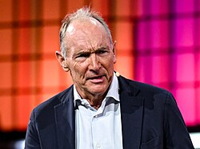
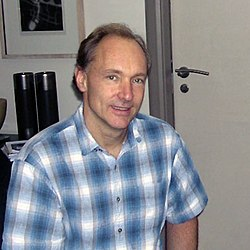
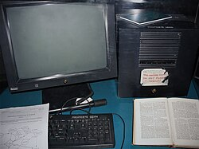
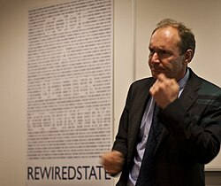
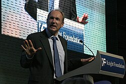
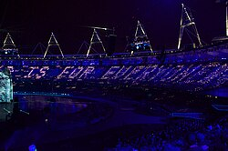

Sir Tim Berners-Lee | |
|---|---|
 Berners-Lee in 2025 | |
| Born | Timothy John Berners-Lee 8 June 1955 London, England |
| Other names |
|
| Education | University of Oxford (BA) |
| Known for | Invention of the World Wide Web, HTML |
| Spouses | Jane Northcote
(m. 1976, divorced)Nancy Carlson
(m. 1990; div. 2011) |
| Children | 2 children 3 step-children |
| Parents |
|
| Awards |
|
| Scientific career | |
| Fields | Computer science |
| Institutions | |
| Website | w3 |
| Signature | |
Sir Timothy John Berners-Lee (born 8 June 1955),[1] also known as TimBL, is an English computer scientist best known as the inventor of the World Wide Web, HTML, the URL system, and HTTP. He is a professorial research fellow at the University of Oxford[2] and a professor emeritus at the Massachusetts Institute of Technology (MIT).[3][4]
Berners-Lee proposed an information management system on 12 March 1989[5][6] and implemented the first successful communication between a Hypertext Transfer Protocol (HTTP) client and server via the Internet in mid-November.[7][8][9][10][11] He devised and implemented the first Web browser and Web server and helped foster the Web's subsequent development. He is the founder and emeritus director of the World Wide Web Consortium (W3C), which oversees the continued development of the Web. He co-founded (with Rosemary Leith) the World Wide Web Foundation. In 2009, he was elected Foreign Associate of the National Academy of Sciences.[12][13]
Berners-Lee was previously a senior researcher and holder of the 3Com founder's chair at the MIT Computer Science and Artificial Intelligence Laboratory (CSAIL).[14] He is a director of the Web Science Research Initiative (WSRI)[15] and a member of the advisory board of the MIT Center for Collective Intelligence.[16][17] In 2011, he was named a member of the board of trustees of the Ford Foundation.[18] He is a founder and president of the Open Data Institute and is an advisor at social network MeWe.[19] In 2004, Berners-Lee was knighted by Queen Elizabeth II for his pioneering work.[20][21] He received the 2016 Turing Award "for inventing the World Wide Web, the first web browser, and the fundamental protocols and algorithms allowing the Web to scale".[22] He was named in Time magazine's list of the 100 Most Important People of the 20th century and has received a number of other accolades for his invention.[23]
Berners-Lee was born in London on 8 June 1955,[24] the son of mathematicians and computer scientists Mary Lee Berners-Lee (née Woods; 1924–2017) and Conway Berners-Lee (1921–2019). His parents were both from Birmingham and worked on the Ferranti Mark 1, the first commercially built computer. He has three younger siblings; his brother, Mike, is a professor of ecology and climate change management.
Berners-Lee attended Sheen Mount Primary School, then Emanuel School (a direct grant grammar school at the time) from 1969 to 1973.[1][20] A keen trainspotter as a child, he learnt about electronics from tinkering with a model railway.[25]
In 1976, Berners-Lee took a first in physics from The Queen's College, Oxford.[1][24] While there, he made a computer out of an old television set he had purchased from a repair shop.[26]

After graduation, Berners-Lee worked as an engineer at the telecommunications company Plessey in Poole, Dorset.[24] In 1978, he joined D. G. Nash in Ferndown, Dorset, where he helped create typesetting software for printers.[24]
Berners-Lee worked as an independent contractor at CERN from June to December 1980. While in Geneva, he proposed a project based on the concept of hypertext, to facilitate sharing and updating information among researchers.[27] To demonstrate it, he built a prototype system named ENQUIRE.[28]
After leaving CERN in late 1980, he went to work at John Poole's Image Computer Systems, Ltd, in Bournemouth, Dorset.[29] He ran the company's technical side for three years.[30] The project he worked on was a "real-time remote procedure call" which gave him experience in computer networking.[29] In 1984, he returned to CERN as a fellow.[28]
In 1989, CERN was the largest Internet node in Europe and Berners-Lee saw an opportunity to join hypertext with the Internet:
I just had to take the hypertext idea and connect it to the TCP and DNS ideas and—ta-da!—the World Wide Web.
— Tim Berners-Lee[31]
Creating the web was really an act of desperation, because the situation without it was very difficult when I was working at CERN later. Most of the technology involved in the web, like the hypertext, like the Internet, multifont text objects, had all been designed already. I just had to put them together. It was a step of generalising, going to a higher level of abstraction, thinking about all the documentation systems out there as being possibly part of a larger imaginary documentation system.
— Tim Berners-Lee[32]

Berners-Lee wrote his proposal in March 1989 and redistributed it in 1990. It then was accepted by his manager, Mike Sendall, who called his proposals "vague, but exciting".[33] Robert Cailliau had independently proposed a project to develop a hypertext system at CERN, and joined Berners-Lee as a partner in his efforts to get the web off the ground.[28] They used similar ideas to those underlying the ENQUIRE system to create the World Wide Web, for which Berners-Lee designed and built the first web browser. His software also functioned as an editor (called WorldWideWeb, running on the NeXTSTEP operating system), and the first Web server, CERN httpd (Hypertext Transfer Protocol daemon).
Berners-Lee published the first website, which described the project itself, on 20 December 1990; it was available to the Internet from the CERN network. The site provided an explanation of what the World Wide Web was, and how people could use a browser and set up a web server and a website.[34][35][36][26] On 6 August 1991, Berners-Lee first posted, on Usenet, a public invitation for collaboration with the WorldWideWeb project.[37]
In a list of 80 cultural moments that shaped the world, chosen by a panel of 25 eminent scientists, academics, writers and world leaders in 2016, the invention of the World Wide Web was ranked number one, with the entry stating: "The fastest growing communications medium of all time, the Internet has changed the shape of modern life forever. We can connect with each other instantly, all over the world."[38]
In 1994, Berners-Lee founded the W3C at the Massachusetts Institute of Technology. It comprised various companies willing to create standards and recommendations to improve the quality of the Web. Berners-Lee made his idea available freely, with no patent and no royalties due. The World Wide Web Consortium decided that its standards should be based on royalty-free technology, so that anyone could easily adopt them.[39]
Berners-Lee participated in Curl Corp's attempt to develop and promote the Curl programming language.[40]
In 2001, Berners-Lee became a patron of the East Dorset Heritage Trust, having previously lived in Colehill in Wimborne, East Dorset.[41] In 2004, he accepted a chair in computer science at the School of Electronics and Computer Science, University of Southampton, Hampshire, to work on the Semantic Web.[42][43]
In a Times article in October 2009, Berners-Lee admitted that the initial pair of slashes ("//") in a web address were "unnecessary". He told the newspaper that he easily could have designed web addresses without the slashes. "There you go, it seemed like a good idea at the time," he said in his lighthearted apology.[44]
Since 2021, Berners-Lee has been an advisory board member of Proton Foundation.[45]

By 2010, he created data.gov.uk alongside Nigel Shadbolt. Of the Ordnance Survey data in April 2010, Berners-Lee said: "The changes signal a wider cultural change in government based on an assumption that information should be in the public domain unless there is a good reason not to—not the other way around." He added: "Greater openness, accountability and transparency in Government will give people greater choice and make it easier for individuals to get more directly involved in issues that matter to them."[46]
In November 2009, Berners-Lee launched the World Wide Web Foundation (WWWF).[47]

Berners-Lee is one of the pioneer voices in favour of net neutrality,[48] and has expressed the view that Internet service providers should supply "connectivity with no strings attached", neither controlling nor monitoring customers' browsing activity without their express consent.[49][50] He advocates the idea that net neutrality is a kind of human network right: "Threats to the Internet, such as companies or governments that interfere with or snoop on Internet traffic, compromise basic human network rights."[51] Berners-Lee participated in an open letter to the US Federal Communications Commission (FCC). He and 20 other Internet pioneers urged the FCC to cancel a vote on 14 December 2017 to uphold net neutrality. The letter was addressed to Senator Roger Wicker, Senator Brian Schatz, Representative Marsha Blackburn and Representative Michael F. Doyle.[52]
Berners-Lee was honoured as the "Inventor of the World Wide Web" during the 2012 Summer Olympics opening ceremony, in which he appeared working with a vintage NeXT Computer.[53] He tweeted "This is for everyone"[54] which appeared in LED lights attached to the chairs of the audience.[53] In 2025, he used the phrase as the title for his book on the history of the Internet, This Is for Everyone.[55]

Berners-Lee joined the board of advisors of start-up State.com, based in London.[56] As of May 2012, he is president of the Open Data Institute,[57] which he and Shadbolt co-founded in 2012.
The Alliance for Affordable Internet (A4AI) was launched in 2013, and Berners-Lee is leading the coalition of public and private organisations that includes Google, Facebook, Intel and Microsoft. The A4AI seeks to make Internet access more affordable so that access is broadened in the developing world where, in 2013, only 31% of people were online. Berners-Lee will work with those aiming to decrease Internet access prices so that they fall below the UN Broadband Commission's worldwide target of 5% of monthly income.[58]
Berners-Lee holds the founders chair in Computer Science at the Massachusetts Institute of Technology, where he heads the Decentralized Information Group and is leading Solid, a joint project with the Qatar Computing Research Institute that aims to radically change the way Web applications work, resulting in true data ownership and greater privacy.[59] In 2016, he joined the Department of Computer Science at Oxford University as a professorial research fellow[60] and as a fellow of Christ Church, one of the Oxford colleges.[61]
From the mid-2010s, Berners-Lee initially remained neutral on the emerging Encrypted Media Extensions (EME) proposal with its controversial digital rights management (DRM) implications.[62] In March 2017 he felt he had to take a position, which was to support the EME proposal.[62] He reasoned EME's virtues whilst noting DRM was inevitable.[62] As W3C director, he approved the finalised specification in July 2017.[63][62] His stance was opposed by some, including Electronic Frontier Foundation (EFF), the anti-DRM campaign Defective by Design and the Free Software Foundation.[63] Concerns included being not supportive of the Internet's open philosophy against commercial interests and risks of users being forced to use a particular web browser to view specific DRM content.[62] The EFF raised a formal appeal. It did not succeed, and the EME specification became a formal W3C recommendation in September 2017.[64]
On 30 September 2018, Berners-Lee announced his open-source startup Inrupt to fuel a commercial ecosystem around the Solid project, which aims to give users more control over their personal data and let them choose where the data goes, who's allowed to see certain elements and which apps are allowed to see that data.[65][66]
In November 2019, at the Internet Governance Forum in Berlin, Berners-Lee and the WWWF launched Contract for the Web, a campaign initiative to persuade governments, companies and citizens to commit to nine principles to stop "misuse", with the warning that "if we don't act now – and act together – to prevent the web being misused by those who want to exploit, divide and undermine, we are at risk of squandering [its potential for good]".[67]
He wove the World Wide Web and created a mass medium for the 21st century. The World Wide Web is Berners-Lee's alone. He designed it. He loosed it on the world. And he more than anyone else has fought to keep it open, nonproprietary and free.
Berners-Lee has received many awards and honours. He was knighted by Queen Elizabeth II in the 2004 New Year Honours "for services to the global development of the Internet", and was invested formally on 16 July 2004.[20][21]
On 13 June 2007, he was appointed to the Order of Merit (OM), an order restricted to 24 living members, plus any honorary members.[68] Bestowing membership of the Order of Merit is within the personal purview of the Sovereign and does not require recommendation by ministers or the Prime Minister.
He was elected a Fellow of the Royal Society (FRS) in 2001.[69] He was also elected as a member into the American Philosophical Society in 2004[70] and the National Academy of Engineering in 2007.
He has been conferred honorary degrees from a number of universities around the world, including Manchester (his parents worked on the Manchester Mark 1 in the 1940s), Harvard and Yale.[71][72][73]
In 2012, Berners-Lee was among the British cultural icons selected by artist Sir Peter Blake to appear in a new version of his most famous artwork – the Beatles' Sgt. Pepper's Lonely Hearts Club Band album cover – to celebrate the British cultural figures of his life that he most admires to mark his 80th birthday.[74][75]
In 2013, he was awarded the inaugural Queen Elizabeth Prize for Engineering.[76] On 4 April 2017, he received the 2016 Association for Computing Machinery's Turing Award for his invention of the World Wide Web, the first web browser, and their fundamental protocols and algorithms.[22]
Berners-Lee has said "I like to keep work and personal life separate."[77]
Berners-Lee has married three times. Following final exams in Oxford, he married Jane Northcote (daughter of Cambridge biologist Don Northcote) in 1976. They moved together to Poole to work at Plessey, and then moved in 1980 to work at CERN together for a six-month contract. After their return to Britain, they decided to end their marriage.[78]
In 1990, Berners-Lee married Nancy Carlson, an American computer programmer. She was also working in Switzerland at the World Health Organization.[79] They had two children and divorced in 2011. In 2014, he married Rosemary Leith at the Chapel Royal, St. James's Palace in London.[80] Leith is a Canadian Internet and banking entrepreneur and a founding director of Berners-Lee's World Wide Web Foundation.[81] The couple also collaborate on venture capital to support artificial intelligence companies.[82]
Berners-Lee was raised as an Anglican, but he turned away from religion in his youth. After he became a parent, he became a Unitarian Universalist (UU).[83] When asked whether he believes in God, he said: "Not in the sense of most people. I'm atheist and Unitarian Universalist."[84]
The web's source code was auctioned by Sotheby's in London during 23–30 June 2021, as a non-fungible token (NFT) by Berners-Lee.[85][86][87] It sold for US$5,434,500.[88] The proceeds would reportedly be used to fund initiatives by Berners-Lee and Leith.[87][85]
In 2025, Berners-Lee published a memoir, This Is for Everyone, with ghostwriter Stephen Witt.[89] Stephen Fry recorded the audiobook.[90]
In November 2025, Berners-Lee was the guest on BBC Radio 4's Desert Island Discs. His choices included "Brothers in Arms" by Dire Straits, "End of the Line" by the Traveling Wilburys, and "Four Strong Winds" by Ian & Sylvia. His luxury item was a chromatic harmonica.[91]
Berners-Lee views Wikipedia as probably the best single example of what he wanted the World Wide Web to be. At the end of Chapter 7 of This is for Everyone, he writes:
Wikipedia has grown to contain millions of articles on every subject known to our species – an invaluable repository of human knowledge that I consider one of the modern wonders of the world. What made this system work was intercreativity – a group of people being creative. Wikipedia is probably the best single example of what I wanted the web to be.[92]
Berners-Lee is an advocate for a universal basic income.[93]
Warning sounded on web's future.
Sir Tim rejects net tracking like Phorm.
Sir Tim rejects net tracking like Phorm.
.jpg){kind=link}
{kind=link}
{kind=link}
{kind=link}
{kind=link}
{kind=link}
{kind=link}
{kind=link}